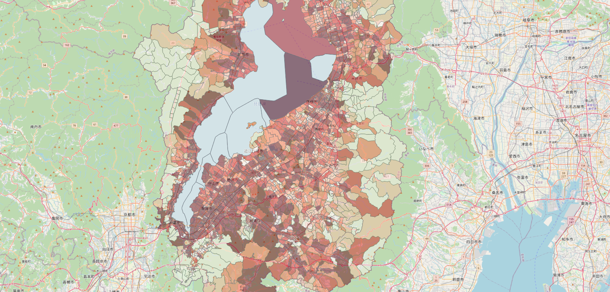
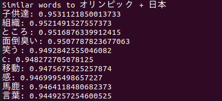
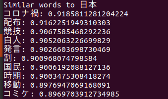

Textmining und Datenverarbeitung in Sozialwissenschaften
## Ziel
* Methodik und Möglichkeiten überhaupt kennenlernen
* Umgang mit den Daten vertraut machen
* Neue Erkenntnisse durch diese Methodik erlangen
* Kritischer Blick auf solche Forschung erlernen
## Was wir jetzt lernen, heisst auf Japanisch...:
* 地理情報システム = GIS (Geoinformationssystems)
* 計量テキスト分析 = Textmining oder Statistical Analysis of Text
* テキストマイニング = Textmining
* 分散表現 = Worteinbettung
Beispiel 1
GIS (Geoinformationssystems)
Bevölkerungsdichte mit Karteninformation

## Was man dafür braucht?
* [QGIS (Software)](https://www.qgis.org/en/site/)
* Statistische und Geographische Daten ([e-Stat](https://www.e-stat.go.jp/gis))
* ...'n bissl Handarbeit an CSV-Daten
## Was bringt diese Visualisierung?
* Intuitive Erfassung, welche Bezirke in der Shiga Präf. dicht besiedelt sind
* Dies kann neue Frage aufwerfen
* ... also diese Methode führt vielleicht zu einer neuen Erkenntnis!
Visualisierung der Substantive in allen Pressekonferenzen vom (damaligen) Prämierminister Kan Naoto
## Was man dafür braucht?
* Textdaten von [WARP-Seite](https://warp.ndl.go.jp/info:ndljp/pid/2629568/www.kantei.go.jp/jp/kan/statement/index.html)! (Das ist das Mühsamste!)
* Python Libraries wie pandas, numpy, matplotlib usw.
* Software für morphologische Analyse ([MeCab](https://www.mlab.im.dendai.ac.jp/~yamada/ir/MorphologicalAnalyzer/MeCab.html)) und Wörterbuch (z.B. [NEologd](https://github.com/neologd/mecab-ipadic-neologd))
* ...und ein wenig Programmierkenntnisse (nicht viel)
Beispiel 3
Worteinbettung
Tweets über "Olympiade" auf Japanisch und Analyse mit Worteinbettung
Bedeutungsnahe Begriffe im Textcorpus. "オリンピック & 日本"

Bedeutungsnahe Begriffe im Textcorpus. "日本"

Bedeutungsnahe Begriffe im Textcorpus. "オリンピック" in 2D-Mapping
## Was man dafür braucht?
* Textdaten von [Twitter (API-Key)](https://developer.twitter.com/en/docs)
* Python Libraries wie [tweepy](https://www.tweepy.org/), [gensim](https://radimrehurek.com/gensim/) usw.
* Software für morphologische Analyse ([MeCab](https://www.mlab.im.dendai.ac.jp/~yamada/ir/MorphologicalAnalyzer/MeCab.html)) und Wörterbuch (z.B. [NEologd](https://github.com/neologd/mecab-ipadic-neologd))
* ...und ein wenig Programmierkenntnisse (nicht viel)